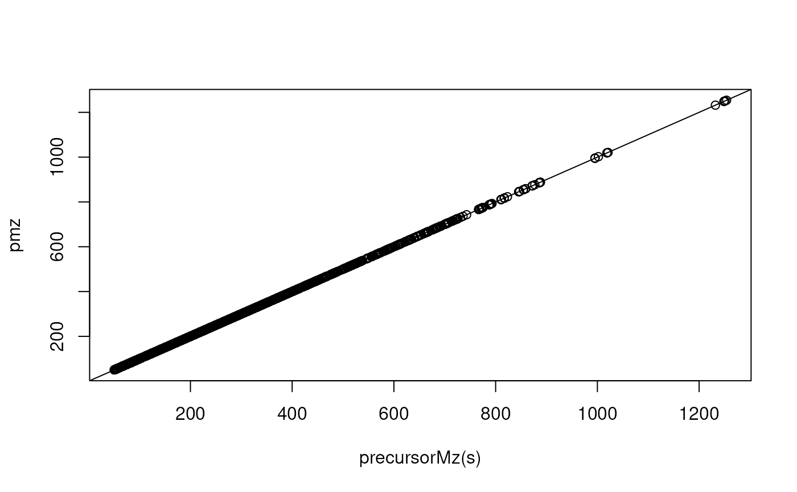
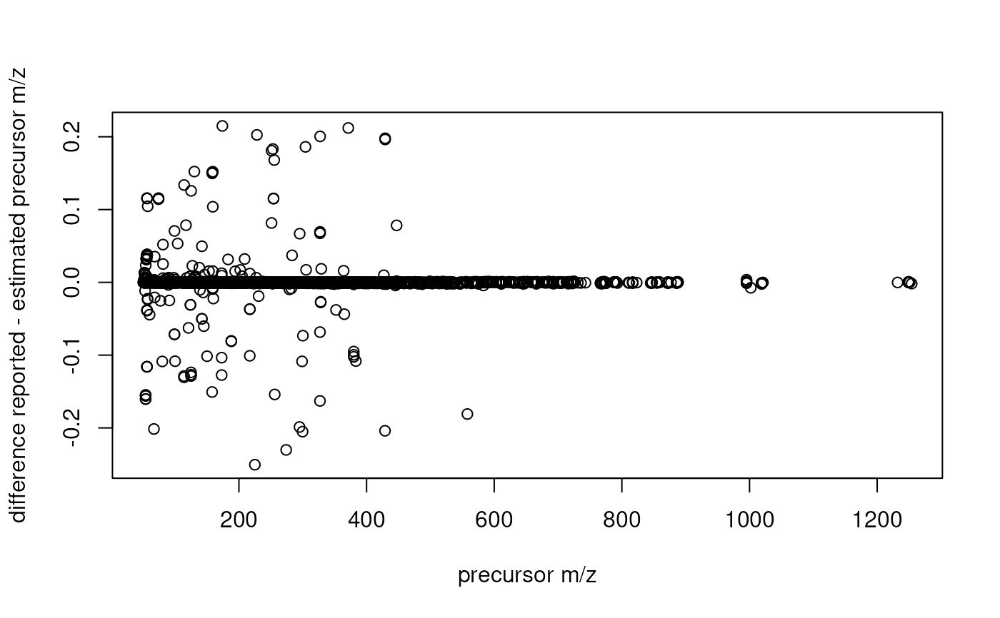

Estimating precursor m/z valus for DDA data
Source:R/Spectra-estimatePrecursorMz.R
estimatePrecursorMz.RdMS data from Waters instruments are calibrated through the Lock Mass, but, while all m/z values of mass peaks in each spectrum will be calibrated by this method, the reported precursor m/z might not. The precursor m/z in the converted mzML file will have m/z values from quadrupole isolation windows instead of accurate m/z values. See also the GNPS documentation for more information.
The estimatePrecursorMz function estimates/adjusts the reported precursor
m/z of a fragment spectrum using the following approach: in data dependent
acquisition (DDA) mode, the MS instrument will select ions with the highest
intensities in one MS scan for fragmentation. Thus, for each fragment
spectrum, this method identifies in the previous MS1 spectrum the peak with
the highest intensity and an m/z value similar to the fragment spectrum's
reported precursor m/z (given parameters tolerance and ppm). This m/z
value is then reported. Since the fragment spectrum's potential MS1 mass
peak is selected based on its intensity, this method should only be used
for DDA data.
Arguments
- object
Spectra()object with DDA data.- tolerance
numeric(1)defining an absolute acceptable difference in m/z between the fragment spectra's reported precursor m/z and the MS1 peaks considered as the precursor peak. All MS1 peaks from the previous MS1 scan with an m/z between the fragment spectrum's precursorMz +/- (tolerance + ppm(precursorMz, ppm)) are considered.- ppm
numeric(1)defining the m/z dependent acceptable difference in m/z. See documentation of parametertolerancefor more information.- BPPARAM
parallel processing setup. Defaults to
BPPARAM = SerialParam(). SeeSerialParam()for more information.
Value
numeric of length equal to the number of spectra in object with
the fragment spectra's estimated precursor m/z values. For MS1 spectra
NA_real_ values are returned. The original precursor m/z is reported
for MS2 spectra for which no matching MS1 peak was found.
Note
This approach is applicable only when fragment spectra are obtained through data-dependent acquisition (DDA), as it assumes that the peak with the highest intensity within the given isolation m/z window (from the previous MS1 spectrum) corresponds to the precursor ion.
The spectra in object have to be ordered by their retention time.
Users of this function should evaluate and compare the estimated precursor m/z values with the originally reported one and only consider adjusted values they feel comfortable with.
Examples
## Load a DDA test data set. For the present data set no large differences
## between the reported and the *actual* precursor m/z are expected.
fl <- system.file("TripleTOF-SWATH", "PestMix1_DDA.mzML", package = "msdata")
s <- Spectra(fl)
pmz <- estimatePrecursorMz(s)
## plot the reported and estimated precursor m/z values against each other
plot(precursorMz(s), pmz)
abline(0, 1)

## They seem highly similar, but are they identical?
identical(precursorMz(s), pmz)
#> [1] FALSE
all.equal(precursorMz(s), pmz)
#> [1] "Mean relative difference: 1.654551e-05"
## Plot also the difference of m/z values against the m/z value
plot(precursorMz(s), precursorMz(s) - pmz, xlab = "precursor m/z",
ylab = "difference reported - estimated precursor m/z")

## we could then replace the reported precursor m/z values
s$precursorMz <- pmz